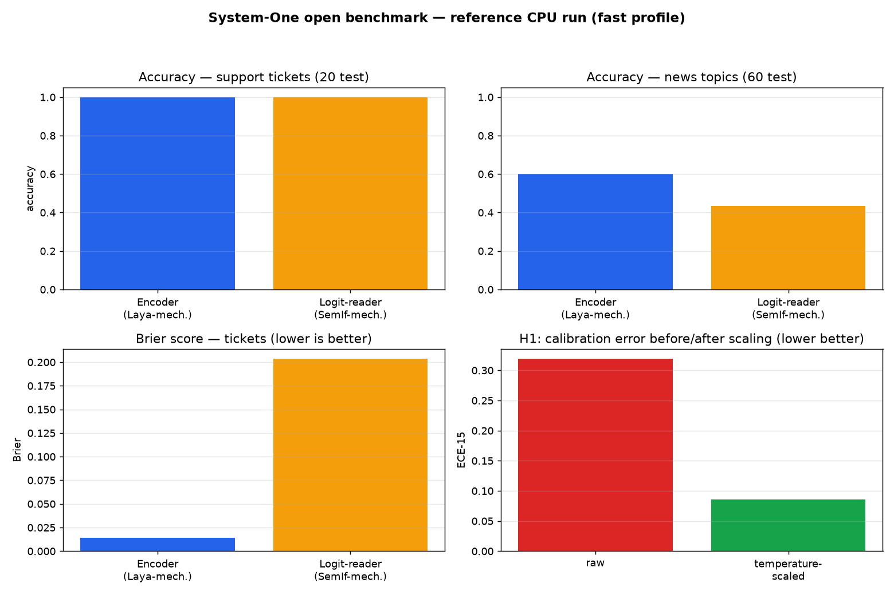
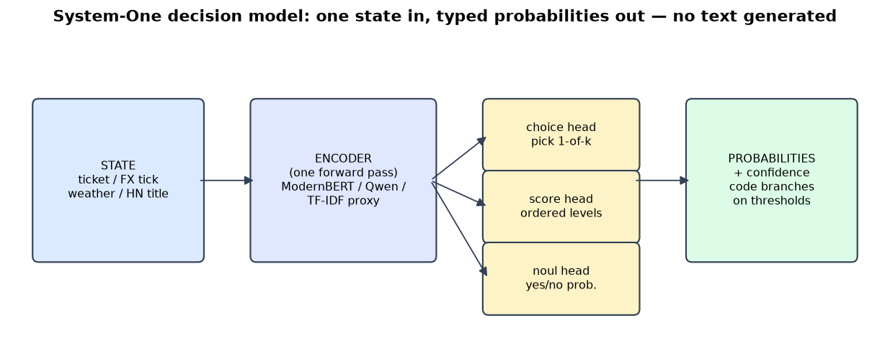

CEO summary. System-One models answer typed business questions — which queue, how urgent, yes or no — with calibrated probabilities, in one fast pass instead of generating text. TypeSafe's Jev defined the category in September 2026; this project proves, with runnable code and real numbers, which open alternatives (Laya, Clef, Kev, SemIf-family) actually exist, where each wins and loses, and which viral claims are unverified. Everything runs on CPU in ~2 minutes with no API keys, including checks against live market and news data.

No background needed. Each paragraph is one idea; together they are most of what interviews test.
You hand it a situation (a ticket, a price, a log line) plus a fixed question; it hands back a typed answer with a probability like {queue: "billing", confidence: 0.97}. No paragraphs to parse, nothing to hallucinate into your database.
choice picks one of up to 255 options. score places the input on an ordered scale you define. noul is the probability a yes/no statement is true. All questions about one situation are answered in parallel, in one request.
Your code acts when confident and asks a human when not: auto-refund at billing ≥ 0.95, review otherwise. The skill is choosing thresholds on your labeled data — this repo shows exactly how.
TypeSafe AI, September 2026: ~70–500 ms per call, $0.042 per million input tokens, 64k-token requests. You cannot download, run offline, or fine-tune it.
Laya trains a small encoder (ModernBERT, 421M) — fast and fully local. Kev and Clef freeze a big open model (Qwen) and add a small scoring head — more accurate, needs a GPU. SemIf/OpenJev-style projects read scores straight out of an existing model.
Every number is produced by code you can run — public datasets, live states, confidence intervals, and a claims file where rows can say UNVERIFIED. Evidence instead of opinions.

experiments/05_media.py. GIF fallback: demo.gif.| Claim | Verdict |
|---|---|
| Jev: choice/score/noul, parallel, RLCD, 70–500 ms, $0.042/M, 64k | VERIFIED |
| Laya 421M ModernBERT, Apache-2.0, ~33 ms | VERIFIED* |
| Clef 27B + Clef-flash 9B, Apache-2.0, vision, 64k, Oct 2026 | VERIFIED |
| Kev 0.8/4/9/27B, Qwen + LoRA-r16 + pointer head | VERIFIED |
| SemIf / OpenJev / jevlike / NanoJev family | VERIFIED |
| "Coin base + B-loss" | CORRECTED — hallucination |
| WaterSheep / CLM-8B 9× / Deem / Tev scores | UNVERIFIED |
| Imajev-4B viral "95%" | PARTIAL — real JevBench entrant; figure unverified |
| "Native Groq/Cerebras 27B" | PARTIAL — deployment property |
* Laya base ≈ chance zero-shot; fine-tuned 0.766 vs Jev 0.727 on typed-decisions; 77-label collapse documented by its vendor.
| Task | Encoder-proxy | Logit-reader |
|---|---|---|
| Tickets accuracy (20 test) | 1.00 [1.00, 1.00] | 1.00 [1.00, 1.00] |
| Tickets Brier ↓ | 0.014 | 0.204 |
| Tickets ECE-15 ↓ | 0.086 | 0.364 |
| News accuracy (60 test) | 0.60 | 0.43 |
| News Brier ↓ | 0.634 | 0.716 |
| News ECE-15 ↓ | 0.255 | 0.148 |
Honest reversal included: the encoder wins Brier but loses ECE on news — which is why this project reports both, plus accuracy-controlled views.
Temperature scaling cut ECE 0.319 → 0.086 with zero answer changes. Scale before gating.
Prose vs flat vs nested JSON flipped the yes/no gate. Pin one serialization per pipeline.
Fixed option budgets give ~2–3 tokens per label. Split choices or shortlist first.
Ordinal severity scoring trails choice/noul everywhere. Calibrate it separately.
Stronger models look "better calibrated" by being right more. Control for accuracy.
Local: byte-identical repeats. Hosted: labels stable, probabilities jitter ±0.01–0.04.
| You are | You get |
|---|---|
| Support / CS lead | A ticket router to test on your own tickets before paying for any API |
| Agent builder | Local drop-in /v1/systemone server + the noul/boolean gotcha, documented |
| ML engineer | 4-axis protocol + ≤12-call shadow procedure for vendor comparison on your labels |
| Researcher / student | Five reproduced patterns with code, figures, and a paper outline |
| Compliance / security | Local-only path, gated review queues, documented adversarial behavior |
git clone <your-fork-url> && cd jev-systemone-open-benchmark-2026 cp .env.example .env # keys optional pip install -r requirements.txt python experiments/run_all.py --fast pytest tests -q # → ALL STEPS OK. See results/*.json
Docker: docker compose up --build benchmark (fast) or --profile full up --build full.
ECB exchange rates, BTC/ETH moves, Berlin temperature, and front-page HackerNews titles — fetched live (11 states in the reference run) and routed through the System-One format. With API keys, a ≤12-call shadow compares hosted Jev/Clef on byte-identical inputs. Without keys: zero spend, zero fabricated numbers.
Everything above is the short version. The complete guide — protocol rationale, configuration table, repository map, limitations, and publish checklist — is in the README (start of repo page). Figures: dashboard, architecture.